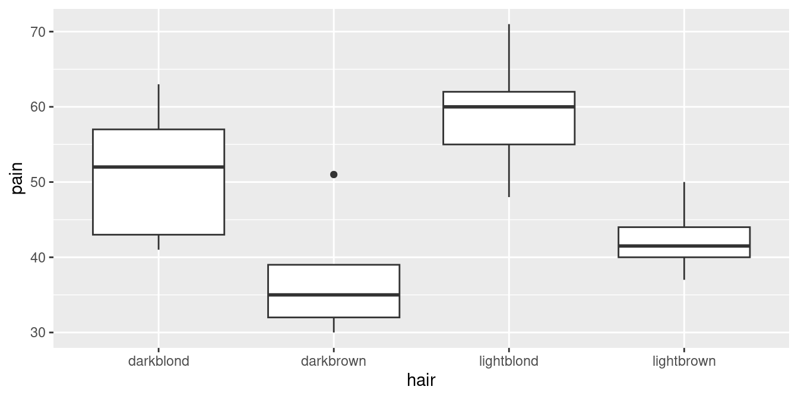
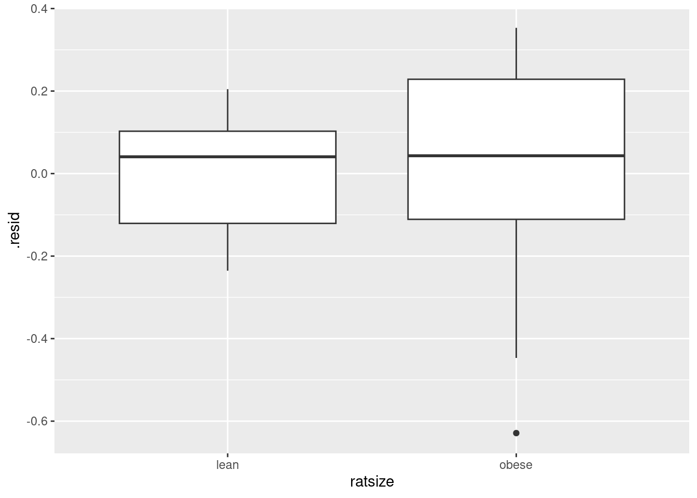
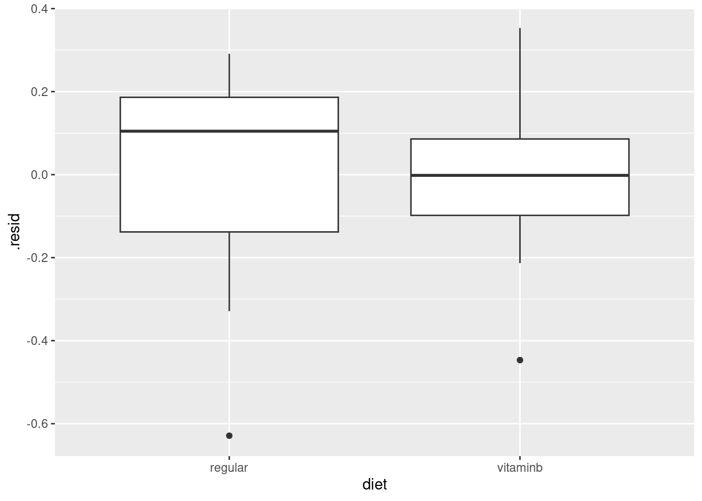
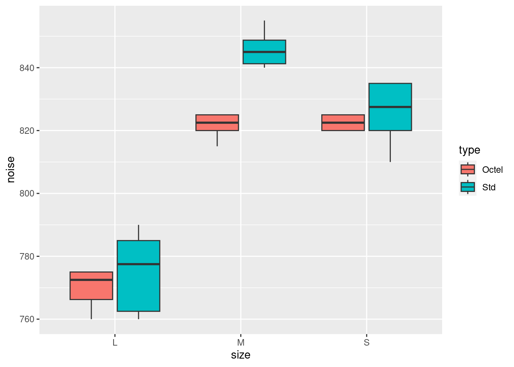
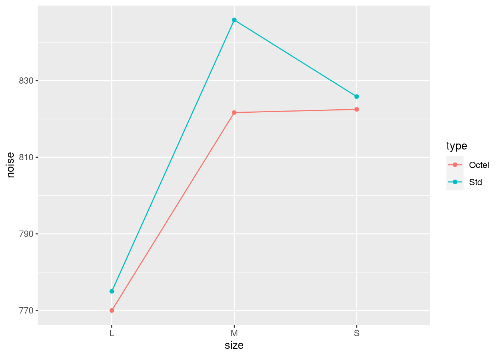
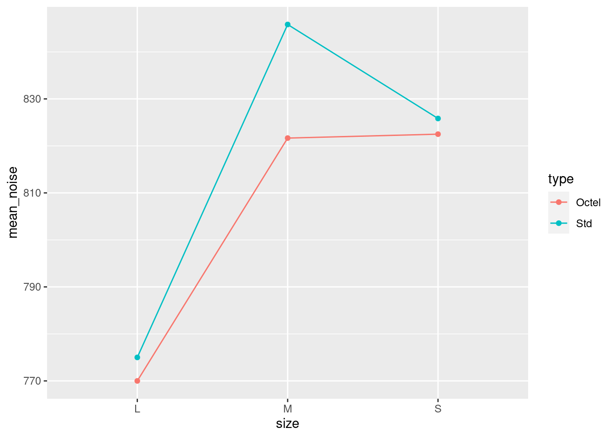

that is, data divided into groups, and see if response significantly different among groups
or, see whether knowing group membership helps to predict response.
Two stages
Typically two stages:
\(F\)-test to detect any differences among/due to groups
if \(F\)-test significant, do multiple comparisons to see which groups significantly different from which.
Need special multiple comparisons method because just doing (say) two-sample \(t\)-tests on each pair of groups gives too big a chance of finding “significant” differences by accident.
Packages
These:
library(tidyverse)
── Attaching core tidyverse packages ──────────────────────── tidyverse 2.0.0 ──
✔ dplyr 1.1.2 ✔ readr 2.1.4
✔ forcats 1.0.0 ✔ stringr 1.5.0
✔ ggplot2 3.4.2 ✔ tibble 3.2.1
✔ lubridate 1.9.2 ✔ tidyr 1.3.0
✔ purrr 1.0.1
── Conflicts ────────────────────────────────────────── tidyverse_conflicts() ──
✖ dplyr::filter() masks stats::filter()
✖ dplyr::lag() masks stats::lag()
ℹ Use the conflicted package (<http://conflicted.r-lib.org/>) to force all conflicts to become errors
library(broom)library(car) # for Levene's text
Loading required package: carData
Attaching package: 'car'
The following object is masked from 'package:dplyr':
recode
The following object is masked from 'package:purrr':
some
Example: Pain threshold and hair colour
Do people with different hair colour have different abilities to deal with pain?
Men and women of various ages divided into 4 groups by hair colour: light and dark blond, light and dark brown.
Each subject given a pain sensitivity test resulting in pain threshold score: higher score is higher pain tolerance.
Brown-haired people seem to have lower pain tolerance.
Boxplot
ggplot(hairpain, aes(x = hair, y = pain)) +geom_boxplot()

Assumptions
Data should be:
normally distributed within each group
same spread for each group
darkbrown group has upper outlier (suggests not normal)
darkblond group has smaller IQR than other groups.
But, groups small.
Shrug shoulders and continue for moment.
Testing equality of SDs
via Levene’s test in package car:
leveneTest(pain ~ hair, data = hairpain)
Warning in leveneTest.default(y = y, group = group, ...): group coerced to
factor.
Levene's Test for Homogeneity of Variance (center = median)
Df F value Pr(>F)
group 3 0.3927 0.76
15
No evidence (at all) of difference among group SDs.
Possibly because groups small.
Analysis of variance
hairpain.1<-aov(pain ~ hair, data = hairpain)summary(hairpain.1)
Df Sum Sq Mean Sq F value Pr(>F)
hair 3 1361 453.6 6.791 0.00411 **
Residuals 15 1002 66.8
---
Signif. codes: 0 '***' 0.001 '**' 0.01 '*' 0.05 '.' 0.1 ' ' 1
P-value small: the mean pain tolerances for the four groups are not all the same.
Which groups differ from which, and how?
Multiple comparisons
Which groups differ from which? Multiple comparisons method. Lots.
Problem: by comparing all the groups with each other, doing many tests, have large chance to (possibly incorrectly) reject \(H_0:\) groups have equal means.
4 groups: 6 comparisons (1 vs 2, 1 vs 3, , 3 vs 4). 5 groups: 10 comparisons. Thus 6 (or 10) chances to make mistake.
Get “familywise error rate” of 0.05 (whatever), no matter how many comparisons you’re doing.
My favourite: Tukey, or “honestly significant differences”: how far apart might largest, smallest group means be (if actually no differences). Group means more different: significantly different.
Pairwise comparisons using t tests with pooled SD
data: pain and hair
darkblond darkbrown lightblond
darkbrown 0.01748 - -
lightblond 0.14251 0.00075 -
lightbrown 0.13337 0.36695 0.00817
P value adjustment method: none
Pairwise comparisons using t tests with pooled SD
data: pain and hair
darkblond darkbrown lightblond
darkbrown 0.0699 - -
lightblond 0.4001 0.0045 -
lightbrown 0.4001 0.4001 0.0408
P value adjustment method: holm
Pairwise comparisons using t tests with pooled SD
data: pain and hair
darkblond darkbrown lightblond
darkbrown 0.0350 - -
lightblond 0.1710 0.0045 -
lightbrown 0.1710 0.3670 0.0245
P value adjustment method: fdr
Pairwise comparisons using t tests with pooled SD
data: pain and hair
darkblond darkbrown lightblond
darkbrown 0.1049 - -
lightblond 0.8550 0.0045 -
lightbrown 0.8002 1.0000 0.0490
P value adjustment method: bonferroni
Comments
P-values all adjusted upwards from “none”.
Required because 6 tests at once.
Highest P-values for Bonferroni: most “conservative”.
Prefer Tukey or FDR or Holm.
Tukey only applies to ANOVA, not to other cases of multiple testing.
Rats and vitamin B
What is the effect of dietary vitamin B on the kidney?
A number of rats were randomized to receive either a B-supplemented diet or a regular diet.
Desired to control for initial size of rats, so classified into size classes lean and obese.
Rows: 28 Columns: 3
── Column specification ────────────────────────────────────────────────────────
Delimiter: " "
chr (2): ratsize, diet
dbl (1): kidneyweight
ℹ Use `spec()` to retrieve the full column specification for this data.
ℹ Specify the column types or set `show_col_types = FALSE` to quiet this message.
2 rat sizes, 2 diets: only \(2 \times 2 = 4\) different fitted values
larger fitted values have greater spread (fan-out, transformation?)
add residuals to data to plot residuals against size, diet (augment from broom):
vitaminb.3%>%augment(vitaminb) -> vitaminb.3a
explanatory ratsize, diet categorical, so plot resid vs. them with boxplots.
Residuals vs rat size
ggplot(vitaminb.3a, aes(x = ratsize, y = .resid)) +geom_boxplot()

Residuals vs diet
ggplot(vitaminb.3a, aes(x = diet, y = .resid)) +geom_boxplot()

Comments
there are low outliers on the plot against diet
residuals for obese rats seem more spread out than for lean rats
case for transformation of rat weights
however, story from our analysis very clear:
rat size strongly significant
diet nowhere near significant
and so expect transformation to make no difference to conclusions.
The auto noise data
In 1973, the President of Texaco cited an automobile filter developed by Associated Octel Company as effective in reducing pollution. However, questions had been raised about the effects of filter silencing. He referred to the data included in the report (and below) as evidence that the silencing properties of the Octel filter were at least equal to those of standard silencers.
u <-"http://ritsokiguess.site/datafiles/autonoise.txt"autonoise <-read_table(u)
── Column specification ────────────────────────────────────────────────────────
cols(
noise = col_double(),
size = col_character(),
type = col_character(),
side = col_character()
)
The data
autonoise
# A tibble: 36 × 4
noise size type side
<dbl> <chr> <chr> <chr>
1 840 M Std R
2 770 L Octel L
3 820 M Octel R
4 775 L Octel R
5 825 M Octel L
6 840 M Std R
7 845 M Std L
8 825 M Octel L
9 815 M Octel L
10 845 M Std R
# ℹ 26 more rows
Making boxplot
Make a boxplot, but have combinations of filter type and engine size.
Use grouped boxplot again, thus:
g <- autonoise %>%ggplot(aes(x = size, y = noise, fill = type)) +geom_boxplot()
The boxplot
See difference in engine noise between Octel and standard is larger for medium engine size than for large or small.
Some evidence of differences in spreads (ignore for now):
g

ANOVA
autonoise.1<-aov(noise ~ size * type, data = autonoise)summary(autonoise.1)
Df Sum Sq Mean Sq F value Pr(>F)
size 2 26051 13026 199.119 < 2e-16 ***
type 1 1056 1056 16.146 0.000363 ***
size:type 2 804 402 6.146 0.005792 **
Residuals 30 1963 65
---
Signif. codes: 0 '***' 0.001 '**' 0.01 '*' 0.05 '.' 0.1 ' ' 1
The interaction is significant, as we suspected from the boxplots.
The within-group spreads don’t look very equal, but only based on 6 obs each.
This time, don’t have summary of mean noise for each size-type combination.
One way is to compute summaries (means) first, and feed into ggplot as in vitamin B example.
Or, have ggplot compute them for us, thus:
g <-ggplot(autonoise, aes(x = size, y = noise,colour = type, group = type)) +stat_summary(fun = mean, geom ="point") +stat_summary(fun = mean, geom ="line")
Interaction plot
The lines are definitely not parallel, showing that the effect of type is different for medium-sized engines than for others:
g

If you don’t like that
then compute the means first, in a pipeline:
autonoise %>%group_by(size, type) %>%summarize(mean_noise =mean(noise)) %>%ggplot(aes(x = size, y = mean_noise, group = type,colour = type )) +geom_point() +geom_line()
`summarise()` has grouped output by 'size'. You can override using the
`.groups` argument.

Simple effects for auto noise example
In auto noise example, weren’t interested in all comparisons between car size and filter type combinations.
Wanted to demonstrate (lack of) difference between filter types for each car type.
These are called simple effects of one variable (filter type) conditional on other variable (car type).
To do this, pull out just the data for small cars, compare noise for the two filter types. Then repeat for medium and large cars. (Three one-way ANOVAs.)
Do it using dplyr tools
Small cars:
autonoise %>%filter(size =="S") %>%aov(noise ~ type, data = .) %>%summary()
Df Sum Sq Mean Sq F value Pr(>F)
type 1 33.3 33.33 0.548 0.476
Residuals 10 608.3 60.83
No filter difference for small cars.
For Medium, change S to M and repeat.
Simple effect of filter type for medium cars
autonoise %>%filter(size =="M") %>%aov(noise ~ type, data = .) %>%summary()
Df Sum Sq Mean Sq F value Pr(>F)
type 1 1752.1 1752.1 68.93 8.49e-06 ***
Residuals 10 254.2 25.4
---
Signif. codes: 0 '***' 0.001 '**' 0.01 '*' 0.05 '.' 0.1 ' ' 1
There is an effect of filter type for medium cars. Look at means to investigate (over).
# A tibble: 3 × 4
size p_val multiplier p_val_adj
<chr> <dbl> <dbl> <dbl>
1 M 0.00000849 3 0.0000255
2 L 0.428 2 0.856
3 S 0.476 1 0.476
No change in rejection decisions.
Octel filters sig. better in terms of noise for medium cars, and not sig. different for other sizes.
Octel filters never significantly worse than standard ones.
Confidence intervals
Perhaps better way of assessing simple effects: look at confidence intervals rather than tests.
Gives us sense of accuracy of estimation, and thus whether non-significance might be lack of power: ``absence of evidence is not evidence of absence’’.
Works here because two filter types, using t.test for each engine type.
Want to show that the Octel filter is equivalent to or better than the standard filter, in terms of engine noise.
Equivalence and noninferiority
Known as “equivalence testing” in medical world. A good read: link. Basic idea: decide on size of difference \(\delta\) that would be considered “equivalent”, and if CI entirely inside \(\pm \delta\), have evidence in favour of equivalence.
We really want to show that the Octel filters are “no worse” than the standard one: that is, equivalent or better than standard filters.
Such a “noninferiority test” done by checking that upper limit of CI, new minus old, is less than \(\delta\). (This requires careful thinking about (i) which way around the difference is and (ii) whether a higher or lower value is better.)
CI for small cars
Same idea as for simple effect test:
autonoise %>%filter(size =="S") %>%t.test(noise ~ type, data = .) %>%pluck("conf.int")
Forest manager concerned about safety of chainsaws issued to field crew. 4 models of chainsaws, measure “kickback” (degrees of deflection) for 5 of each:
A B C D
-----------
42 28 57 29
17 50 45 29
24 44 48 22
39 32 41 34
43 61 54 30
So far, standard 1-way ANOVA: what differences are there among models?
chainsaw kickback (2)
But: models A and D are designed to be used at home, while models B and C are industrial models.
Suggests these comparisons of interest:
home vs. industrial
the two home models A vs. D
the two industrial models B vs. C.
Don’t need to compare all the pairs of models.
What is a contrast?
Contrast is a linear combination of group means.
Notation: \(\mu_A\) for (population) mean of group \(A\), and so on.
In example, compare two home models: \(H_0: \mu_A-\mu_D=0\).
Compare two industrial models: \(H_0: \mu_B-\mu_C=0\).
Compare average of two home models vs. average of two industrial models: \(H_0: \frac{1}{2}(\mu_A+\mu_D)-{1\over 2}(\mu_B+\mu_C)=0\) or \(H_0: 0.5\mu_A-0.5\mu_B-0.5\mu_C+0.5\mu_D=0\).
Note that coefficients of contrasts add to 0, and right-hand side is 0.
Contrasts in R
Comparing two home models A and D (\(\mu_A-\mu_D=0\)):
c.home <-c(1, 0, 0, -1)
Comparing two industrial models B and C (\(\mu_B-\mu_C=0\)):
c.industrial <-c(0, 1, -1, 0)
Comparing home average vs. industrial average (\(0.5\mu_A-0.5\mu_B-0.5\mu_C+0.5\mu_D=0\)):
c.home.ind <-c(0.5, -0.5, -0.5, 0.5)
Orthogonal contrasts
What happens if we multiply the contrast coefficients one by one?
c.home * c.industrial
[1] 0 0 0 0
c.home * c.home.ind
[1] 0.5 0.0 0.0 -0.5
c.industrial * c.home.ind
[1] 0.0 -0.5 0.5 0.0
in each case, the results add up to zero. Such contrasts are called orthogonal.
Orthogonal contrasts (2)
Compare these:
c1 <-c(1, -1, 0)c2 <-c(0, 1, -1)sum(c1 * c2)
[1] -1
Not zero, so c1 and c2 are not orthogonal.
Orthogonal contrasts are much easier to deal with.
Can use non-orthogonal contrasts, but more trouble (beyond us).
# A tibble: 20 × 2
model kickback
<fct> <dbl>
1 A 42
2 B 28
3 C 57
4 D 29
5 A 17
6 B 50
7 C 45
8 D 29
9 A 24
10 B 44
11 C 48
12 D 22
13 A 39
14 B 32
15 C 41
16 D 34
17 A 43
18 B 61
19 C 54
20 D 30
Comments
P-values all adjusted upwards from “none”.
Required because 6 tests at once.
Highest P-values for Bonferroni: most “conservative”.
Prefer Tukey or FDR or Holm.
Tukey only applies to ANOVA, not to other cases of multiple testing.